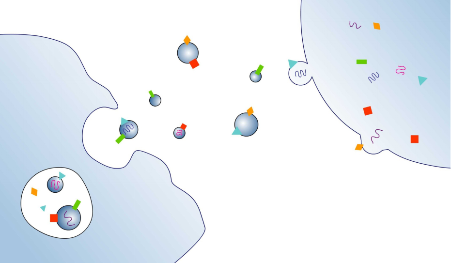
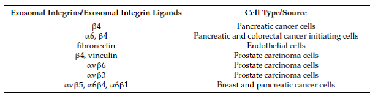
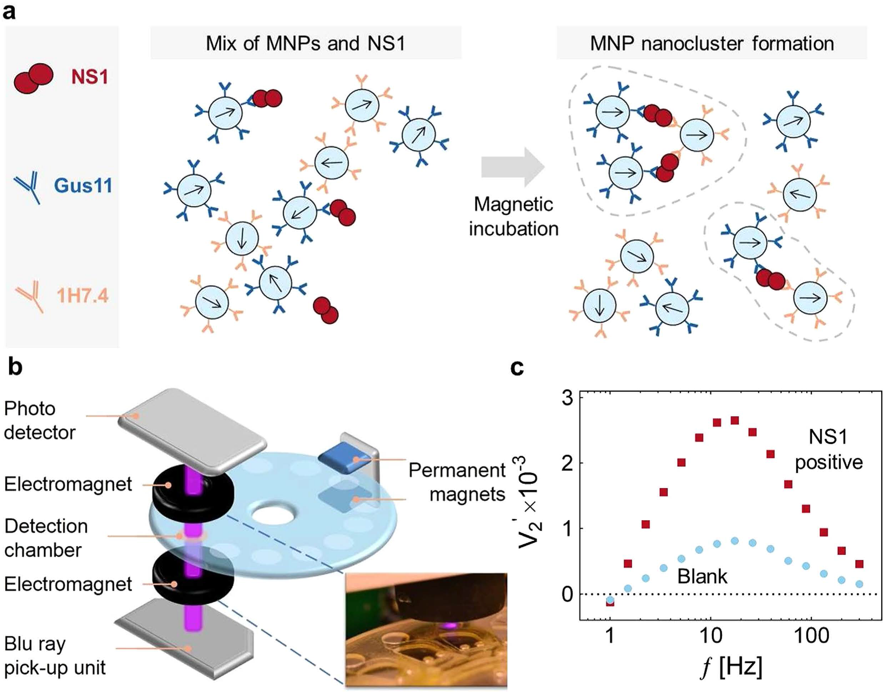
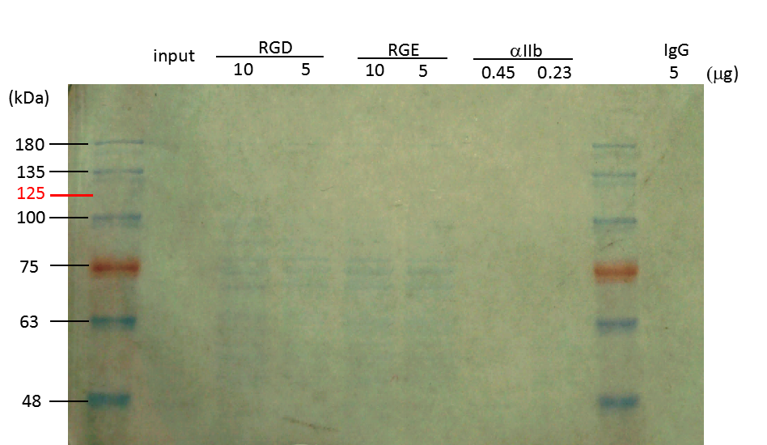
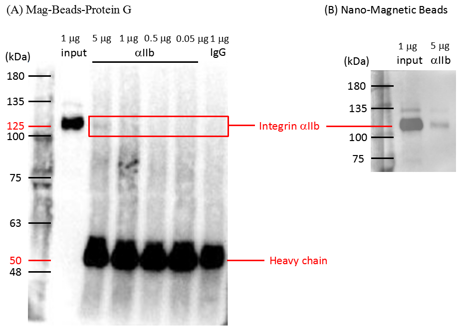
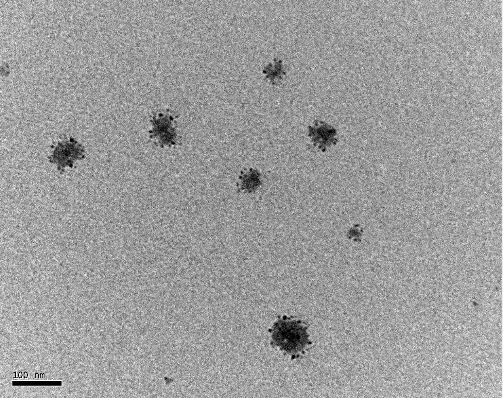
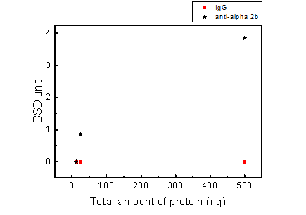
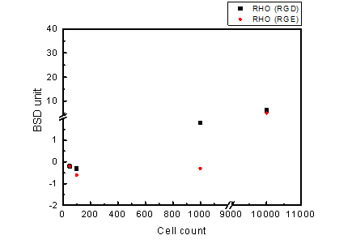
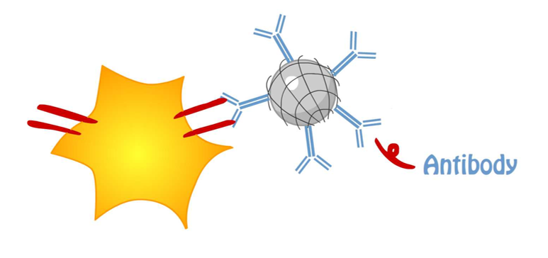
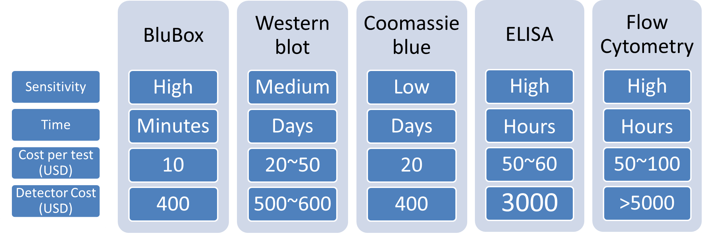

Abstract
Rapid detections of viral loads and cancer biomarkers in blood samples are highly demanded in clinical examination. Blusense Diagnostic has developed a portable and affordable device, BluBox, using immunoassay combined with magnetic nanoparticle technology for rapid and time-saving examination of Dengue viruses in blood. To expand the possible usage of BluBox in detection of exosome containing cancer markers, in this project, we aimed to establish a platform by detection of platelet integrin αIIbβ3 as a model. We synthesized nano-magnetic beads and conjugated with antibodies against platelet integrin αIIb or recombinant proteins of rhodostomin (RHO), a snake venom, which can specifically bind to αIIbβ3 receptors. Compared with western blot analysis and EIA measurement, we demonstrated that BluBox detector had a higher sensitivity in detecting platelet αIIbβ3. In the future, we will further develop a BluBox-based system for detecting cancer cell markers in blood, saliva, or urine.

Background
Cancer is the second leading cause of death globally and metastasis is a major cause of cancer death [1]. Metastasis, cancer cells migrating from the original sites to other tissues, is an irreversible step of cancer progression. Although the process of cancer metastasis is very complicated and the mechanism is not completely understood, a recent review article indicated that integrins play an important role in pancreatic cancer and prostate carcinoma (see Table 1 adapted from reference [2]). Exosomes are, vesicles with diameter 30 to 130 nm. When secreted from cancer cells, exosomes carry information, such as integrin and miRNA, to target tissue to create a tumor niche. Therefore, circulating exosomes in body fluid, such as blood and urine, could be valuable diagnostic markers for cancer metastasis.
Table 1 Integrin and integrin ligands found in exosomes.

Adapted from Cancer (2017)
Nucleic acids, and proteins are two common targets in clinical examination of viral and bacterial infections as well as many inherited diseases and cancers. For protein detection, RIA (radioimmunoassay) and EIA or ELISA (Enzyme-Linked ImmunoSorbent Assay) are commonly used in the clinics; while WB (western blot) is used mostly in laboratory. Blusense Diagnostic [3] is, a joint company of Denmark and Taiwan. Its headquarter in Taiwan is located in the Linkou Science Park nearby Chang Gung University [4] campus. Blusense Diagnostic developed a new device, BluBox, for detection of Dengue viruses. The device combines immunoassay and magnetic nanoparticle technology to quantify magnetic bead clusters when antibody-conjugated beads bind with viral particles in the magnetic field without adding extra chemicals. Such one-step detection requires only one drop of blood and 8 min for knowing the amount of viral antigens present in the blood sample (see Figure 1, adapted from reference [5]).

Figure 1. The principle of one-step nano-magnetic bead-based immunoassay
(a) Schematic diagram of nano-magnetic bead clusters formation after magnetic incubation. (b) Diagram of BluBox device. (c) Spectra of the normalized 2nd harmonic photodetector signal vs. frequency of the magnetic field excitation.
After visiting the company to learn the fundamental principle of BluBox, we purposed to extend the usage of BluBox for rapid detection of cancer makers in liquid biopsies, particularly on exosomes containing tumor metastasis markers [2, 6]. Research laboratories in our university have identified several cancer markers [7, 8]. However, key reagents, such as antibodies against these biomarkers, and exosome samples from patients are not available yet. As the first step toward the goal, we set up a platform for detecting platelet integrin αIIbβ3 because of three advantages.
First, integrin αIIbβ3 is one of the most abundance receptors on platelet membranes. Second, antibodies against integrin αIIbβ3 are commercially available. Third, platelets are anucleated discoid cells of 2-3 μm in size. After Triton X-100 treatment, platelet size can be reduced to the size of exosomes (100 nm) or the size of viruses (less than 100 nm).
Methods
Platelet protein analysis by Coomassie blue staining and western blot
Various numbers of platelets (ranging from 1x107 to 1x109/ml) were lysed with denaturing sample loading buffer and subjected to SDS-PAGE analysis. Proteins in the gel were stained with Coomassie blue or transferred onto a nitrocellulose membrane. After incubation with anti-integrin αIIb antibody as the primary antibody and HRP-conjugated donkey anti-rabbit IgG as a secondary antibody, signals were visualized by enhanced chemiluminescence (ECL) with Bio-rad imager.
TEM examination of platelets treated with Triton X-100
Platelets treated with or without 0.1% Triton X-100 were loaded onto a formvar-coated copper grids. Samples were observed in a Joel electron microscope and the actual size of fragmented platelets was measured.
BluBox detection of integrin αΙΙb on platelets and HeLa cells
Solution of nano-magnetic beads conjugated with integrin αIIb antibody and control IgG (1 mg/ml) were both diluted by fifty folds. Platelet sample was lysed by RIPA lysis buffer, diluted into different concentrations. Five μl of the diluted platelet samples were mixed with 5 μl of the diluted nano-magnetic beads solution, loaded into a cartridge, and detected by BluBox.
Results
Platelet protein analysis
We performed SDS-PAGE followed by Coomassie blue staining (Figure 2) or western blot (Figure 3) to detect integrin αIIb. Coomassie blue staining could not detect 5 μg total platelet.

Figure 2. Coomassie blue analysis of integrin αIIb in lysed platelets after GST-RHO(RGD) pulldown, GST-RHO(RGE) pulldown, or immunoprecipitation with anti-integrin αIIb antibody
Glutathione beads were precoated wih 10 and 5 μg of GST-RHO(RGD) and GST-RHO(RGE), and then incubated with 5 μg of platelet lysate. Mag-Beads-Protein G were precoated with 0.45 and 0.23 μg of anti-integrin αIIb antibody, and then incubated with 5 μg of platelet lysate. Protein bands around 75 kDa in RGD and RGE lanes are probably derived from E. coli. The expected band (indicated with 125 in red) of integrin αIIb was not detected by Coomassie blue staining. Protein markers in kDa are indicated on the left.
However, western blot results show a specific band of 125 kDa, the correct size of integrin αIIb. This band could not be detected in total platelet lysate with the amount of proteins less than 0.7 μg.
Figure 3. Western blotting analysis of integrin αIIb in lysed platelets
Intact platelets were lysed in RIPA lysis buffer. The amounts of platelet proteins loaded are indicated above the image. The membrane with transferred proteins was cut between the 75 kDa and 63 kDa molecular weight markers. Upper part of the membrane was blotted with anti-integrin αIIb antibody (1:1000 in 1X TBST buffer). Lower part of the memebrane was blotted with anti-actin antibody as the protein loading control. Integrin αIIb (indicated by 125 kDa in red) and actin proteins are clearly visible. Protein markers in kDa are indicated on the left. The detection limit of this commercial anti-integrin αIIb in western blot was around 0.5 μg of total platelet proteins.
We also performed immunoprecipitation followed by SDS-PAGE and western blot analysis. Integrin αIIb was detected at 125 kDa when higher amount of proteins were loaded (Figure 4). However, the intensity of the band is less than 10% of total input proteins, suggesting low efficiency of immunoprecipitation. The sensitivity detected by Coomassie blue stain is even lower than immunoprecipitation and western blot analyses. Nevertheless, we confirmed that both commercial antibody and platelet preparation are suitable for the following NMBs detection.

Figure 4. Immunoprecipitation of integrin αIIb from lysed platelets
Five to 0.05 μg of total proteins from lysed platelets were pulled down by anti-integrin αIIb antibody conjugated with Mag-Beads-Protein G (A) and Nano-Magnetic Beads (B). Immunoprecipitated proteins were analyzed by western blot using anti-integrin αIIb antibody. Input lane was a positive control to indicate the position (125 kDa) and signal intensity of 1 μg integrin αIIb. IgG rabbit antibody was used as a negative control. Antibody heavy chain was detected at a position close to 50 kDa. Protein markers in kDa are indicated on left. Due to low efficiency of immunoprecipitation, only 5% of integrin from the input was detected.
TEM examination of Triton X-100 treated platelets
To mimic viral particles or exosomes, we reduced the size of intact platelets to 30 nm-130 nm by 0.1% Trion X-100 treatment. TEM results showed varying 0.1% sizes from 20 nm to 126 nm with an average diameter of 58 nm (Figure 5). The fragmented platelet sample was then used in BluBox detection for integrin amount.

Figure 5. TEM image of platelets treated with 0.1% Triton X-100
Platelets were treated with 0.1% Triton X-100 to obtain smaller fragments and observed under a TEM magnified by 200,000 folds. The average diameter of individual platelet fragments was 48 nm that mimicked exosomes secreted by cancer cells.
BluBox detection
Nano-magnetic beads (NMBs) conjugated with integrin αIIb antibody or control IgG were used to detect integrin on fragmented platelet membranes in BluBox. There was little or no signal from IgG control group. In contrast, NMBs conjugated with integrin αIIb antibody yielded signals that were proportional to the amount of platelet input (Figure 6).

| Total protein (ng) | anti-integrin αIIb (BSD) | IgG (BSD) | |
|---|---|---|---|
| 500 | 4 | 3.7 | 0 |
| 25 | 0.9 | 0.8 | 0 |
| 12.5 | 0 | 0 | 0 |
Figure 6. BluBox detection of integrin αIIb on platelets
Solution of nano-magnetic beads conjugated with integrin αIIb antibody and control IgG (1 mg/ml) were both diluted by fifty folds. Platelet sample was lysed by RIPA lysis buffer and adjust to three different concentrations. Five μl of platelet samples were mixed with 5 μl of diluted nano-magnetic beads solution, loaded into a cartridge, and detected by BluBox. The total amount of protein loaded into the cartridge was 12.5, 50 and 500 ng, respectively.
BluBox detection of cancer cell integrin biomarkers by Nano-magnetic Beads coated with GST-RHO(RGD) and GST-RHO(RGE)
Nano-magnetic Beads coated with GST-RHO(RGD) or GST-RHO(RGE) were equally mixed with HeLa cells which were pretreated with RIPA lysis buffer. Ten microliters of the mixture were loaded into tested cartridge and detected by BluBox. The read out was converted cell number. Figure 7 shows some significant differences between GST-RHO (RGD) and GST-RHO (RGE) coated nano-magnetic beads by BluBox detection. In high cell concentration, the BluBox detection was unable to distinguish the differences.

Figure 7. BluBox detection of integrin on HeLa cell membrane
Solution of nano-magnetic beads conjugated with GST-RHO(RGD) and GST-RHO(RGE) were both diluted by 50 folds. Varying concentrations of proteins were obtained by lysing 100, 1000, and 10000 HeLa cells in 100 μl RIPA lysis buffer. Five μl HeLa cell lysates were mixed with 5 μl of the diluted NMBs solution, loaded into a cartridge, and detected by BluBox.
Discussion
In this project, we demonstrated that nano-magnetic beads conjugated with anti-integrin αIIb antibodies can be used to detect platelet integrin αIIb successfully integrin from HeLa cell lysates could also be detected by BluBox using nano-megnatic beads conjugated with GST-RHO(RGD) and GST-RHO(RGE) for some HeLa cell concentrations. However, the sensitivity did not reach the low limit of 25 ng/ml as reported by Antunes et al. [5]. One of possibility was the nature of coated beads. In the future, we will combine nano-magnetic beads (NMBs) coated with anti-integrin αIIb antibody and recombinant rhodostomin to improve detection sensitivity. Improved BluBox sensitivity will provide an alternative choice for clinical detection of functional integrin αIIb in addition to conventional EIA and Flow Cytometry (see table 2 below). The advantages of using BluBox in a clinical setting are low cost of instrument, easy handle.


Table 2 Comparison of various techniques for protein detection.
References
[1] http://www.who.int/en/.
[2] Paolillo, M. and S. Schinelli, Integrins and Exosomes, a Dangerous Liaison in Cancer Progression. Cancers (Basel), 2017. 9(8).
[3] http://www.blusense-diagnostics.com.
[4] http://www.cgu.edu.tw.
[5] Antunes, P., et al.,Quantification of NS1 Dengue biomarker in serum via optomagnetic nanocluster detection.Sci Rep, 2015. 5: p. 16145.
[6] Hurwitz, S.N., et al., Proteomic profiling of NCI-60 extracellular vesicles uncovers common protein cargo and cancer type-specific biomarkers. Oncotarget, 2016. 7(52): p. 86999-87015.
[7] Chen, C.L., et al., Comparative Tissue Proteomics of Microdissected Specimens Reveals Novel Candidate Biomarkers of Bladder Cancer. Mol Cell Proteomics, 2015. 14(9): p. 2466-78.
[8] Chiang, S.F., et al., Bone Marrow Stromal Antigen 2 Is a Novel Plasma Biomarker and Prognosticator for Colorectal Carcinoma: A Secretome-Based Verification Study. Dis Markers, 2015. 2015: p. 874054.
Acknowledgments
We would like to express our gratitude to Professor Sze-Cheng John Lo for his guidance and support, and to our Department faculty, Li-Man Hung, Chao-Lan Yu Sebastian D. Fugmann, Scott C. Schuyler, Shu-Yuan Yang, and Sheng-Chieh Hsu, for their critical comments on our project and oral presentation. We would also like to thank the following professors and their lab members, Mu-Yi Hua, Ching-Ping Tseng, Li-Man Hung, Robert Y.-L. Wang, Yaa-Jyuhn Meir, Mei-Ling Cheng, Chao-Lan Yu, and Sze-Cheng John Lo, for supplying materials and technical help. We would like to give our special thanks to Blusense Diagnostic for making the BluBox available to us. Travel fund was partially supported by CGU.